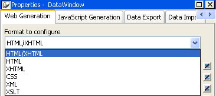
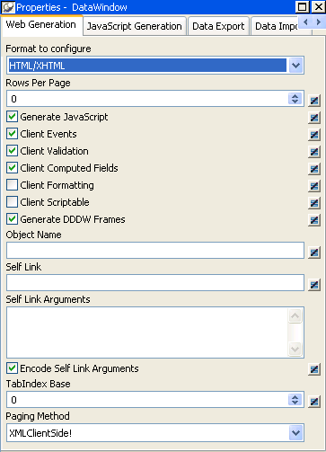
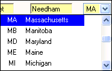
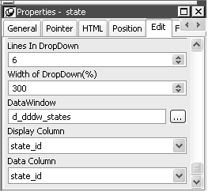
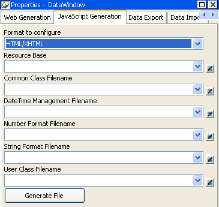
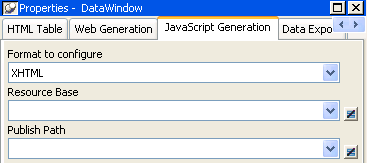

The Web DataWindow supports most PowerBuilder DataWindow functionality. This section describes what features to use to take full advantage of the Web DataWindow.
 Use default properties of DataWindow column edit styles The properties of DataWindow column edit styles default to
values that optimize their appearance—for example, radio
buttons are left aligned. If you must change these style properties,
the appearance of a column in the Web DataWindow might differ from
its appearance in the DataWindow painter because the browser manages
the rendering of HTML controls. You can adjust the appearance of
the Web DataWindow by repositioning the control or resizing the
column.
Use default properties of DataWindow column edit styles The properties of DataWindow column edit styles default to
values that optimize their appearance—for example, radio
buttons are left aligned. If you must change these style properties,
the appearance of a column in the Web DataWindow might differ from
its appearance in the DataWindow painter because the browser manages
the rendering of HTML controls. You can adjust the appearance of
the Web DataWindow by repositioning the control or resizing the
column.
Many existing DataWindow objects work in the Web DataWindow. If a DataWindow object uses features that the Web DataWindow does not support, then the features are ignored. You can still use the DataWindow object if the remaining functionality is acceptable for your application. For example: if the DataWindow includes a graph control, the graph is ignored; if the DataWindow uses the Graph presentation style, the DataWindow object will not be useful.
| DataWindow feature | Supported and unsupported features |
|---|---|
| Presentation styles | All presentation styles except OLE, Graph, TreeView, and RichText are supported. Unsupported presentation styles retrieve data but display nothing. The Grid presentation style is rendered as an HTML table if you use the HTML format, and as a result absolute positioning is not supported and the display characteristics differ from those of XML and XHTML Web DataWindows. |
| Nested and composite reports | Supported for the XHTML format only. |
| Controls | Supported controls: Column, Computed
Field, Graph, Text, Picture, Button, GroupBox, Rectangle. These controls are ignored: OLE Object, OLE Database Blob, RoundRectangle, Oval, InkPicture. Report controls are supported in XHTML Web DataWindows only. Rectangles cannot be rendered in a Label DataWindow with any rendering format when the layer of the Rectangle is foreground, unless the height of the DataWindow control is set to a fixed value. The following Rectangle properties are not supported: moveable, pointer, resizeable, slideleft, slideup, brush.hatch, pen.style GroupBoxes cannot be rendered in Crosstab and Grid style DataWindows. The following GroupBox properties are not supported: moveable, pointer, resizeable, slideleft, slideup, font.charset, font.width. Only horizontal Line controls are supported. The line's color property is always rendered, and the width property is rendered if the line is solid. Other line styles are displayed as solid lines with the default width. Vertical and slanted lines are ignored.
|
| Retrieving data | Up to 16 retrieval arguments are supported.
Filtering and sorting are supported by setting properties with the
Modify method or calling methods on the server component. Sorting
can also be specified by using a client control method. User-specified queries using the QueryMode property are not supported. |
| Updating data | Same as the PowerBuilder DataWindow control. The DataWindow object must contain editable columns. |
| Edit styles | All edit styles are supported except InkEdit and EditMask, with the exception of the DDCalendar EditMask. If the DataWindow uses the EditMask edit style, the styles specified are treated as though they were specified as a display format. |
| DDCalendar EditMask property | The DDCalendar EditMask property option
allows for separate selections of the calendar month, year, and
date. This option can be set in a check box on the Edit tab of the
DataWindow painter Properties view when a Date or DateTime column
with the EditMask edit style is selected. It can also be set in
code, as in this example for the birth_date column: dwEmp.Modify("birth_date.EditMask.DDCalendar='Yes'")For more information, see "Using a drop-down calendar ". |
| DropDownDataWindows | A drop-down DataWindow must be in the same PBL as the DataWindow in which it is used. Data for drop-down DataWindows is retrieved on the server. See "Using drop-down DataWindows". The dddw.lines property is not supported in Web pages because the browser controls how the DropDownDataWindow displays. |
| Display formats | Supported, including the use of color. |
| Validation rules | The expression might be evaluated on
the client or the server, depending on the expression. For information, see "Using expressions". |
| Property expressions | Evaluated on the server. |
| Layout | Properties that specify autosizing of height and width or allow the user to resize or move controls, such as SlideLeft and SlideRight, are ignored. |
| Properties | The following properties are not supported:
The Limit property is not supported in multiline edit columns in a Web DataWindow. In JavaScript, the multiline edit column maps to a textarea object, and the limit property maps to a maxlength attribute, which the textarea object does not support. |
| Tab order | Supported in HTML 4 and later browsers. |
The drop-down calendar DataWindow option is available for use on any DataWindow column with an EditMask, and a Date, DateTime, or TimeStamp datatype. The DDCalendar EditMask property option allows for separate selections of the calendar month, year, and date. This option can be set in a check box on the Edit tab of the DataWindow painter Properties view when a column with the EditMask edit style is selected. It can also be set in code, as in this example for the birth_date column:
dw_1.Modify("birth_date.EditMask.DDCalendar='Yes'")
You can set the following properties to control the display of the calendar in a script or on the Other page in the Properties view for the column:
To make sure that dates selected with the drop-down calendar option are displayed with the desired edit mask for Web DataWindows, you should specify that the Client Formatting option be included with the static JavaScript generated and deployed for the DataWindow. To conserve bandwidth, JavaScript for client formatting is not included by default. To include this script, you can select the Client Formatting check box on the Web Generation page of the DataWindow Properties view. If you do not include script for client formatting, the drop-down calendar will use a default edit mask to display the column data based on the client machine's default localization settings.
To navigate in the drop-down calendar, a user can:
This section describes the XML, XHTML, and HTML DataWindow object properties for the Web DataWindow. You can set these properties in the DataWindow painter or in script.
For more detailed information about each property, see the DataWindow Reference or the online Help for the property name. For information about how to set properties in the DataWindow painter, including shared HTML and XHTML properties, see "Setting Web generation properties for the Web DataWindow".
Table 6-4 shows row data properties for the XML and XHTML Web DataWindow.
Table 6-5 lists properties supporting XML Web DataWindow generation.
 About PublishPath and ResourceBase PublishPath is a string that specifies the physical path of
the Web site folder to which PowerBuilder publishes generated CSS,
JavaScript, XML, or XSLT. ResourceBase is a string that specifies
the URL of the generated file.
About PublishPath and ResourceBase PublishPath is a string that specifies the physical path of
the Web site folder to which PowerBuilder publishes generated CSS,
JavaScript, XML, or XSLT. ResourceBase is a string that specifies
the URL of the generated file.
There are four types of HTML properties you can set in the DataWindow painter. The first three apply to the DataWindow object itself. The last applies to bitmap, column, computed field, and text controls in the DataWindow object.
 Some properties are now shared but property names are
unchanged In previous versions of PowerBuilder, HTML properties applied
only to the HTML Web DataWindow. Now some HTML properties are shared
with the XML Web DataWindow and the XHTML Web DataWindow. The HTML property
names have not changed.
Some properties are now shared but property names are
unchanged In previous versions of PowerBuilder, HTML properties applied
only to the HTML Web DataWindow. Now some HTML properties are shared
with the XML Web DataWindow and the XHTML Web DataWindow. The HTML property
names have not changed.
Each of the Web formats (and ultimately the files) that contribute to the generation of a Web DataWindow require configuration:
 XHTML and HTML optimized for a browser For information about generating XHTML and HTML optimized
for a specific browser, see "Specifying Web generation
for a specific browser"
XHTML and HTML optimized for a browser For information about generating XHTML and HTML optimized
for a specific browser, see "Specifying Web generation
for a specific browser"
The rest of this section describes configuration of HTML, XHTML, CSS, XML, and XSLT. For information about JavaScript configuration, see "Using JavaScript caching for Web DataWindow methods".
To configure a particular Web format, you use the Web Generation page in the DataWindow object property view. The Web Generation page is controlled by the Format to configure drop-down list box at the top of the view that displays the Web formats for the Web DataWindow:

The properties that are shared by all rendering formats display in the view by default:

The properties you can set are subject to change based on the format you select:
Typically you share style (CSS), layout (XSLT), and control definitions (JS) for use by all clients; however, if you use dynamic DataWindows customized for specific clients, you can force generation of the DataWindow presentation-related document names to be specific to each client. You do this by selecting the Session Specific CSS, XSLT and JS Filenames check box or by setting the CSSGen.SessionSpecific property to "yes". This eliminates the possibility of server-side contention for presentation formats when the DataWindow generation is specific to the client.
For different DataWindows with the same name in the same application, you can eliminate the possibility of server-side contention for presentation formats and data content by entering a fully qualified file name (rather than a path) for the publish path properties of those DataWindows. If you do use a file name for a publish path property, the file extension must correspond to the type of format you are configuring. For example, if you are adding a file name to the publish path of the XML format, the file extension must be XML.
Some supported features increase the size of the generated code. If you do not use a feature such as display formatting, validation rules, or client-side scripting, you can enhance performance by preventing the server component from generating code for the unused feature. You can turn these features on or off on the Web Generation property page in the DataWindow painter or in a script. For more information, see "Controlling what is generated ".
You can also cache client-side methods in JavaScript files to reduce the size of the generated code and increase performance on both the server and the client. Without JavaScript caching, each time a Web DataWindow is rendered in a client browser, JavaScript code for DataWindow methods is generated on the server and downloaded to the client. When you set DataWindow properties to reference cached JavaScript files, the methods defined in the files are not generated with the HTML in any Web DataWindow pages that are sent to the page server (and client browser).
For more information, see "Using JavaScript caching for Web DataWindow methods".
When you tab to a column that uses the drop-down DataWindow edit style, you can use the arrow keys on the keyboard to change its value. If you click the column, the drop-down DataWindow displays so that you can scroll to a different value and click to select it.

You set the display properties for the column on the Edit page in the Properties view in the DataWindow painter. The Width of DropDown property sets the width of the drop-down display to a size that is a percentage of the width of the column. For example, 300 sets the display width to three times the column width.

The default behavior uses inline frames (iFrames), which increases the volume of markup generated. For DataWindow objects that make heavy use of drop-down DataWindows, you can save bandwidth by generating the drop-down DataWindows in HTML select elements. To do so, clear the Generate DDDW Frames check box on the Web Generation page with the Format to Configure option set to HTML/XHTML or set the HTMLGen.GenerateDDDWFrames property to "No".
For information about the HTMLGen.GenerateDDDWFrames property, see the DataWindow Reference or online Help.
 Netscape and Mozilla browsers The HTMLGen.GenerateDDDWFrames property is not supported in
Netscape or Mozilla browsers. For information on browser support,
see "Browser requirements for
the XML Web DataWindow".
Netscape and Mozilla browsers The HTMLGen.GenerateDDDWFrames property is not supported in
Netscape or Mozilla browsers. For information on browser support,
see "Browser requirements for
the XML Web DataWindow".
The PagingMethod property enables you to specify how paging requests are handled. The default setting is PostBack, which posts each page request back to the server. You can change the setting on the Web Generation page in the Properties view with the Format to Configure set to HTML/XHTML.
CallBack paging uses a script callback feature to provide page navigation without posting the whole page back to the server. The XML data for the next requested page is downloaded as an XML string returned to the callback. A JavaScript function on the client collects the data and invokes the client-side XSLT processor to transform the data using the XSLT stylesheet that was downloaded and cached on the first request. The next page of data is displayed on demand. If you set the PagingMethod property to CallBack, you do not need to write server-side code and client-side JavaScript to take advantage of the script callback feature.
For the XML rendering format, the design of the Callback! option requires that a reusable XSLT stylesheet be generated so that the browser can cache it. The benefit from this requirement is that only the XML data for the next requested page need be returned by the callback. This XML data is always trivial in size (about a 1 to 20 ratio), resulting in significant bandwidth savings. This is unlike other implementations, where the entire presentation is always regenerated and downloaded again from every callback.The generated XSLT stylesheet is not reusable, and therefore cannot be cached by the browser, if the DataWindow layout is inconsistent page-to-page, or it does not contain a complete first page of data. In these scenarios, the Callback! option defers to PostBack! until a stylesheet can be generated that is reusable, and can therefore be cached in the browser.
When the PagingMethod property is set to XMLClientSide, the page takes slightly longer to load on the first request because all the data in the result set is pulled down to the client, but subsequent paging requests take place entirely on the client. InsertRow, AppendRow, and DeleteRow actions take place on the client with no postback or callback to the server. However, any computed fields in the DataWindow that rely on the RowCount method are not reevaluated until the user performs an action such as an Update or Retrieve that forces a postback to the server.
Client-side paging is available only for the XML rendering format and in button actions and client JavaScript paging functions of the Web DataWindow client control.
You can use the Web Data Window JavaScript Generator wizard to create JavaScript files (at design time) that contain the JavaScript client-side methods. You can start the Web Data Window JavaScript Generator wizard by clicking the Generate File button in the JavaScript Generation property page of the DataWindow property view or from the Tool tab of the New dialog box.
These JavaScript files (HTML/XHTML) are shared by all Web formats of the Web DataWindow—XML, XHTML, and HTML.

Each pass of the wizard generates only one file—which allows you to combine or separate classes of functions. Once you have generated one or more JavaScript files, you can attach them to a DataWindow object using the Filename drop-down lists (for Common Class, Date Time Management, Number Format, String Format, and User Class) in the JavaScript Generation property page.
Generating and associating JavaScript files with a DataWindow object enables the JavaScript functions to be cached and then reused each time the page containing the DataWindow object displays in the browser.
To configure the JavaScript generation properties that are only for the XML Web DataWindow and XHTML Web DataWindow, you select XHTML and provide the resource base and the publish path:

When you set new DataWindow properties to reference included JavaScript files, the methods defined in the referenced files are not generated with the HTML in any Web DataWindow pages that are sent to the page server and client browser. Using JavaScript files also reduces the size of the HTML page rendered in the browser.
With JavaScript caching, you improve performance on the client machine as long as the client browser is configured to use cached files. With caching enabled, the browser loads the JavaScript files from the Web server into its cache, and these become available for all the Web DataWindow pages in your application. There is no client-side performance gain if the browser does not find the JavaScript files in its cache since, in this case, it reloads the files from the Web server.
With the Web DataWindow JavaScript Generator wizard, you can generate only one JavaScript file at a time. The wizard gives you the option of including all Web DataWindow methods in a single file, but you can also restrict the types of methods to include in each JavaScript file it generates every time you use the wizard. The different method types correspond to the following DataWindow HTML properties:
| HTMLGen.property | Contents of cached file |
|---|---|
| CommonJSFile | Methods used by all DataWindows. |
| DateJSFile | Methods used by DataWindows with date and time formatting. |
| NumberJSFile | Methods used by DataWindows with number formatting. |
| StringJSFile | Methods used by DataWindows with string formatting. |
| UserJSFile | User-defined client-side JavaScript methods—these cannot be generated by the Web DataWindow JavaScript Generator wizard (see "User-defined JavaScript methods"). |
All of these properties are optional. You can set each of the properties from the JavaScript Generation page of the DataWindow property view, selecting the files you generate with the wizard as values. The wizard registers each file it generates, making it available for selection from the drop-down lists in the DataWindow property view.
You must deploy all cached files for your Web application to your Web server. You can use relative URLs or path names for cached JavaScript files if you specify their location in the HTMLGen.ResourceBase property.
You set these on the JavaScript Generation page of the DataWindow property view in the DataWindow painter. The ResourceBase property is also used to specify the location of image files.
If you do not set the HTMLGen.ResourceBase property, you must include the complete URL in the values of any of the HTMLGen properties that you set. In either case, the URLs are rendered as SRC attributes inside SCRIPT tags in the pages generated by the Web DataWindow component and sent to the client browser.
You can customize the DataWindow HTML Generator component (nv_remote_datawindow in PBDWRMT.PBL that ships with PowerBuilder), setting the HTMLGen properties in the script for the Generate method. This example sets the URL location for included files and names the files for common and date-formatted Web DataWindow methods that you deploy to the Web server (and that will be downloaded to browser clients the first time they connect to the Web site):
ids_datastore.Modify &
("DataWindow.HTMLGen.ResourceBase=" +&
"'http://www.myserver.com/JavaScripts'")
ids_datastore.Modify &
("DataWindow.HTMLGen.CommonJSFile=" +&
"'dwcomn.js'")
ids_datastore.Modify &
("DataWindow.HTMLGen.DateJSFile=" +&
"'dwdate.js'")
You can also reference a file where you store your own client-side JavaScript methods. To use this feature, you must assign the name of the file to the DataWindow HTMLGen.UserJSFile property and make sure the file is available to your Web server. As for the wizard-generated JavaScript files, you can use the HTMLGen.ResourceBase property to set the location for the file, or you can include the complete path to the file in the property value assignment.
You can make this assignment in the DataWindow painter or in script. The following script sets the user-defined JavaScript file to MyMethods.JS:
ids_datastore.Modify &
("DataWindow.HTMLGen.UserJSFile=" +&
"'http://my_server.com/JavaScripts/MyMethods.JS'")
This example will be rendered in the generated HTML page as:
<SCRIPT LANGUAGE="JavaScript" SRC=
"http://my_server.com/JavaScripts/MyMethods.JS">
</SCRIPT>
You can then call client-side methods stored in the MyMethods.JS file from the HTML syntax rendered for (or appended to) controls in a DataWindow object. For information on generating or appending HTML syntax to controls, see "Rendering HTML for controls in an HTML Web DataWindow".
In general, expressions for validation rules and computed fields are translated into JavaScript and evaluated in the client browser. For validation of data entry, the user gets immediate feedback on the new data.
Some expressions have to be evaluated on the server. This might be because the evaluation involves all the rows, rather than data on the current page only, or because the expression does not translate into JavaScript.
If an expression includes these functions, it will be evaluated on the server:
If you use an aggregation function in a computed field, the value is computed on the server and displayed on the client. If the user edits data, the value is not updated. If an action occurs that reloads the page, the value is computed again based on the changed data.
 ProfileInt and ProfileString return default values The ProfileInt and ProfileString DataWindow expression functions
do not examine a user's INI files if you use them in an
expression evaluated on the client. Doing so would be a security
violation. They always return the default value.
ProfileInt and ProfileString return default values The ProfileInt and ProfileString DataWindow expression functions
do not examine a user's INI files if you use them in an
expression evaluated on the client. Doing so would be a security
violation. They always return the default value.
If a data source for your Web DataWindow uses foreign characters with accent marks, you might need to change the character set for the generated Web page to display the characters properly. This is also necessary if you expect to update the data with foreign character text. You can use the HTML editor to edit the <META> tags in the <HEAD> section of the generated page. The following example uses the utf8 character set instead of the default iso-8859-1 character set:
<META content="text/html; charset=utf-8" http-equiv="Content-Type">
 Changing the character set in EAServer You can also change the character set used by your component
in EAServer by setting the com.sybase.jaguar.component.code.set
property for the component. By default, the component uses the server's
codeset.
Changing the character set in EAServer You can also change the character set used by your component
in EAServer by setting the com.sybase.jaguar.component.code.set
property for the component. By default, the component uses the server's
codeset.
For JSP pages, you assign the character set for the response object in a page directive:
<%@ page contentType="text/html; charset=UTF-8" %>
For the JSP request object, you must assign the character set in a server-side setCharacterEncoding call:
<% request.setCharacterEncoding (contentType="text/html; charset=UTF-8"); %>
You can set properties that apply to all Web DataWindow formats that cause columns, text, computed fields, and Picture controls to be hyperlinks. In the painter, select the control and choose the HTML tab in the Properties view. The URL you specify must be valid when you deploy your application.
Rather than set link information in the painter, you can set the HTML properties for columns by calling methods of the server component. For information, see the SetColumnLink method in the DataWindow Reference .
 For HTML Web DataWindow only This section applies to the HTML Web DataWindow only. XML
Web DataWindow and XHTML Web DataWindow features supersede the need
to perform any of the following actions.
For HTML Web DataWindow only This section applies to the HTML Web DataWindow only. XML
Web DataWindow and XHTML Web DataWindow features supersede the need
to perform any of the following actions.
You can include valid HTML in some controls in a DataWindow object, including a text control, column, or computed field. To render the contents of the control as HTML when the HTML for the DataWindow is generated, set the control's ValueIsHTML property to TRUE. For example, suppose a text control's text property is <I>Name</I>. The following table shows how the text is rendered in the generated HTML and displayed in a browser.
| ValueIsHTML | Generated HTML source | Output in browser |
|---|---|---|
| TRUE | <I>Name</I> | Name |
| FALSE | <I>Name</I> | <I>Name</I> |
 No validation The HTML Generator does not validate the HTML you include
in controls in DataWindow objects. If the HTML is not valid, the
DataWindow might not display correctly.
No validation The HTML Generator does not validate the HTML you include
in controls in DataWindow objects. If the HTML is not valid, the
DataWindow might not display correctly.
The AppendedHTML property enables you to append your own HTML to the HTML generated by the HTML Generator component. You can use this feature to specify attributes and event actions. The HTML you specify for the AppendedHTML property value is appended to generated syntax for the rendering of a DataWindow control before the closing bracket of the HTML element for that control.
 No validation The HTML Generator does not validate the HTML you append to
controls in DataWindow objects. If the HTML is not valid, the DataWindow
might not display correctly.
No validation The HTML Generator does not validate the HTML you append to
controls in DataWindow objects. If the HTML is not valid, the DataWindow
might not display correctly.
You must also make sure not to use an event handler name that is already generated for a DataWindow control as a client-side event handler. These include:
When a DataWindow object includes a Button control, the button becomes an HTML or XHTML button element in the Form element for the Web DataWindow client control. The button action becomes JavaScript code for the button's Clicked event. You do not need to write any code yourself.
You can use Button controls for:
These button actions are not supported and are ignored:
| Cancel | QueryClear |
| Filter | QueryMode |
| Preview | QuerySort |
| PreviewWithRulers | SaveRowsAs |
| Sort |
Button actions send information back to the server, whose scripts apply the action to the DataWindow data. Then the Web page is reloaded. To complete this loop, you must set the SelfLink property for the DataWindow object so that the server knows what page to reload.
You can set this property in the DataWindow painter on the Web Generation tab in the DataWindow properties view, or you can set it in a server-side script. The value is the name of the application server template or file to be reloaded—generally, the name of the current document. If the DataWindow uses retrieval arguments, they must be provided in the SelfLinkArgs property.
For more information, see "Passing page-specific data to the reloaded page" and the SetSelfLink method in the DataWindow Reference . For information on setting links on a DataWindow object (such as a button or column) in the PowerBuilder HTML editor, see the chapter on the Web DataWindow DTC in Working with Web and JSP Targets .
The picture on a button in a DataWindow object can be rendered in the Web browser as a JPEG, GIF, or BMP image. Use a JPEG or GIF image to ensure that the image will display on all browsers. PowerBuilder provides GIF images for commonly used buttons such as Retrieve, Update, PageNext, and so on. These pictures are included in the DWACTION.JAR file in the Sybase\Shared\PowerBuilder directory.
To make the images available to the Web page in the Web browser, you must uncompress the JAR file, deploy the image files to the page server, and set the HTMLGen.ResourceBase property to the directory where the files are located.
If you want to use an existing DataWindow object that does not have Button controls, you can edit the DataWindow object and save a new version with Button controls. However, if you are sharing DataWindow objects with an existing application and it is not practical to edit them, your Web page can include HTML or XHTML buttons that call methods of the Web DataWindow client control.
There are methods of the client control that correspond to each of the supported button actions. For information, see "Writing client-side scripts".
You can use any image types the browser supports, most commonly JPEG or GIF. Use relative paths for ease of deployment.
To make sure the images are available to the Web page in the browser, place the image files in a directory on the Web server and then set the HTMLGen.ResourceBase property to that directory. You can do this in the DataWindow painter on the JavaScript Generation page of the DataWindow property view, or in a script:
dwMine.Modify("DataWindow.HTMLGen.ResourceBase='C:\Sybase\MyApp\Images'")
The ResourceBase property also specifies the location of JavaScript include files. See "Using JavaScript caching for Web DataWindow methods".
 Where to deploy image files The image files need to be deployed to the Web server, not
the component server. If these servers are on different computers,
the files belong with the templates and Web files of the application,
not the PBL containing the DataWindow objects.
Where to deploy image files The image files need to be deployed to the Web server, not
the component server. If these servers are on different computers,
the files belong with the templates and Web files of the application,
not the PBL containing the DataWindow objects.
The Web DataWindow can generate XHTML and HTML optimized for different browsers. You can use the Browser choice for the XHTML and HTML formats on the Web Generation tab of the DataWindow property sheet to preview what the DataWindow looks like in different browsers. You can also specify an HTML version that the Web generation should use if it does not recognize the browser.
At runtime, a server-side script should find out what browser the current client is using and pass that information to the server component. For information, see "SetBrowser " and the SetBrowser method in the DataWindow Reference or online Help.
Netscape implements absolute positioning differently than Internet Explorer. To format the DataWindow with absolute positioning for Netscape browsers, you must set the DataWindow HTMLGen.NetscapeLayers property to true. You can do this in the DataWindow painter by selecting the Use Layers for Netscape check box on the Web Generation page of the DataWindow property view. Alternatively, you can use a DataWindow Modify call in the script for the Generate method of the HTML Generator (nv_remote_datawindow in PBDWRMT.PBL that ships with PowerBuilder).
The default DataWindow HTML Generator generates code for determining the browser type and version of the client browser. For Netscape browsers earlier than the 4.0 version, the DataWindow is formatted as an HTML table, whether or not the NetscapeLayers property is set.
 Limitations in Netscape Certain functionality in a Netscape browser using absolute
positioning might not be identical to the functionality available
with Internet Explorer. For example, you cannot tab between DataWindow
columns using a Netscape browser on an NT machine, although you
can do this using a Netscape browser on a Solaris machine.
Limitations in Netscape Certain functionality in a Netscape browser using absolute
positioning might not be identical to the functionality available
with Internet Explorer. For example, you cannot tab between DataWindow
columns using a Netscape browser on an NT machine, although you
can do this using a Netscape browser on a Solaris machine.
To see what the DataWindow will look like in a Web DataWindow application, you can use HTML Preview.
 To get an HTML preview of a Web DataWindow:
To get an HTML preview of a Web DataWindow:
On the General property page of the DataWindow property sheet, check Web DataWindow.
If you do not check Web DataWindow, the preview displays the data as an HTML table without buttons, validation rules, or other scripts.
On the Web Generation page, specify a value for Rows per Page.
This sets the PageSize property for the DataWindow object. To display only one row of data, specify 1.
Specify a value for Browser and one for Version if you want to preview the DataWindow for a specific client configuration.
Select Design>HTML Preview from the menu bar.
If the menu item is disabled, open the Preview view to enable it.
Enter data and see whether validation rules behave as expected.
Use your buttons to navigate to other pages.